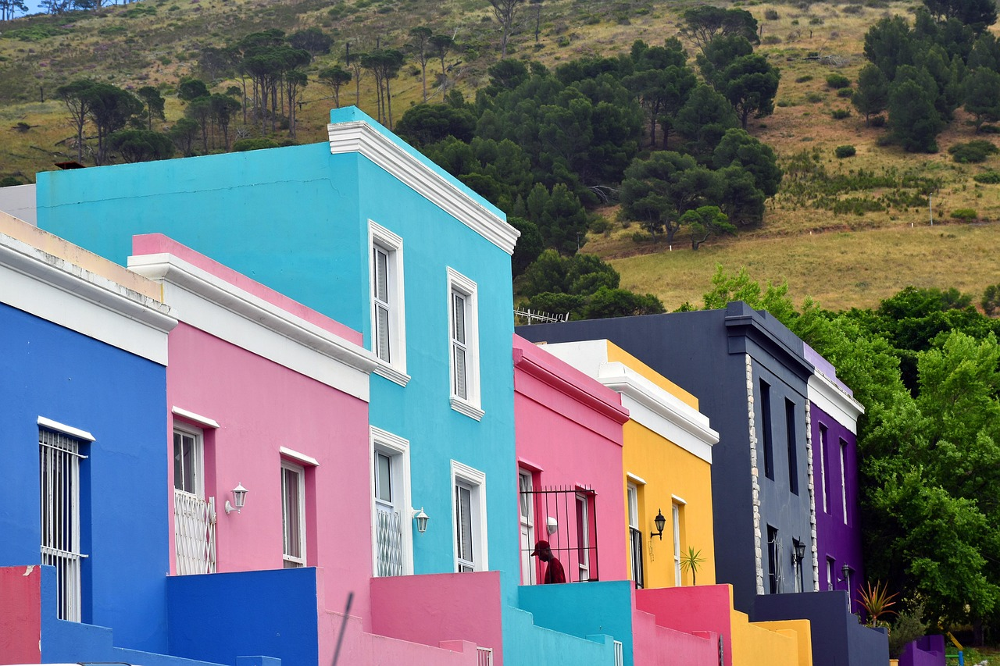

About Us

Welcome to Explore Cape. We are here to help you explore one of South Africa's most beautiful and diverse cities. Whether you are interested in the iconic Table Mountain, rich culture, historic landmarks or just to enjoy the local cuisine, Cape town offers something special for each traveller and we are here to guide you through the best experiences. Start you Cape town Journey with us and make your visit truly memorable.